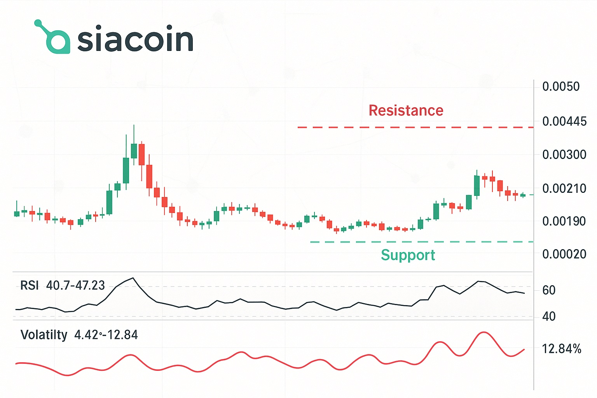

Siacoin Price Prediction for End of 2025: In-Depth Analysis and Insights
The information in this article is provided for educational purposes only and is not investment advice. Cryptocurrency investments carry risks.
Introduction
As of August 22, 2025, Siacoin (SC) is trading at approximately $0.0032, serving as the native utility token of the Sia blockchain, a decentralized cloud storage platform. Launched in 2015, Sia enables users to lease unused storage space in a secure, trustless marketplace, competing with centralized providers like Google Drive and Dropbox. Siacoin facilitates payments for storage and smart contract enforcement, with over 367 active storage providers and a growing ecosystem supported by the Sia Foundation. This article provides a comprehensive analysis of Siacoin’s price outlook for the end of 2025, exploring bullish and bearish scenarios, key growth drivers, and potential risks based on current market trends and ecosystem developments.

Current Situation
As of August 22, 2025, Siacoin’s price is around $0.0032, reflecting a slight decline from $0.00347 earlier in the month, with a 24-hour trading volume of approximately $6.8 million. Over the past 30 days, SC has seen 15/30 (50%) green days with a volatility of 5.7%, indicating moderate price stability. The Fear & Greed Index stands at 49 (Neutral), suggesting balanced investor sentiment. Technical indicators show a bullish short-term outlook, with 8/17 indicators signaling buy and an RSI of 40.58, indicating neutral conditions. However, Siacoin remains 96.31% below its all-time high of $0.0941 from January 2018. Recent developments, including a planned hard fork in June/July 2025, bolster optimism for network upgrades and adoption.
Price Predictions for End of 2025
Analyst forecasts for Siacoin by December 2025 vary widely due to market volatility and differing methodologies. Bearish scenarios, considering a potential 30–40% market correction, suggest SC could dip to $0.0028–$0.003468. Moderate projections estimate a range of $0.00659–$0.017047, driven by steady adoption of decentralized storage. Bullish forecasts, particularly if the 2025 hard fork succeeds and market sentiment improves, predict SC reaching $0.014526–$0.025731, with some optimistic outlooks suggesting a high of $0.1054. A consensus from sources like CoinLore, CoinCodex, and CryptoNewsZ leans toward $0.0076–$0.017698 by year-end, with potential to hit $0.03 in a strong bull market.
Factors Driving Price Growth
- Decentralized Storage Demand: Growing concerns over data privacy and security drive interest in Sia’s blockchain-based storage, increasing SC demand.
- 2025 Hard Fork: The planned hard fork in June/July 2025 aims to enhance network scalability and efficiency, potentially boosting adoption.
- Sia Foundation Grants: The Sia Foundation’s grants program, started in 2022, funds new projects, enhancing the ecosystem and SC utility.
- Market Rally Potential: A projected crypto market surge in early 2025 (February–April) could lift SC’s price, especially if tied to Bitcoin’s performance.
- Active Storage Providers: With 367 active providers, Sia’s network demonstrates robust infrastructure, supporting long-term growth.
Risks and Downward Factors
- Market Volatility: A projected 30–40% market correction in early 2025 could depress SC’s price, as seen in past bear markets.
- Competition: Competing storage solutions like Filecoin and centralized providers (e.g., Google Drive) may limit Sia’s market share.
- Regulatory Risks: Evolving global cryptocurrency regulations could restrict Sia’s accessibility or adoption.
- Hard Fork Risks: Technical issues or community resistance during the 2025 hard fork could erode investor confidence.
Volatility Analysis
From July to August 2025, Siacoin’s price dropped from $0.003575 to $0.0032, a 10.49% decline, with a volatility of 5.7% indicating moderate stability compared to historical trends. The 50-day SMA is rising, suggesting short-term bullish potential, while the 200-day SMA remains flat, indicating a neutral long-term trend. The RSI at 40.58 reflects neutral momentum, with support at $0.00305 and resistance at $0.00357. A projected market rally in early 2025 could drive SC toward $0.017, but failure to break resistance may lead to a drop to $0.0028. Sia’s robust network and increasing adoption provide a foundation for recovery, though short-term bearish pressure persists.
Conclusion
By the end of 2025, Siacoin’s price is projected to range between $0.0076 and $0.017698, with the potential to reach $0.025731 in a bullish market driven by the 2025 hard fork, growing demand for decentralized storage, and market recovery. However, investors should remain cautious of market volatility, competitive pressures, and regulatory uncertainties. Thorough research and risk management are essential before investing in Siacoin. For more details on Sia’s ecosystem, visit the official Sia website.